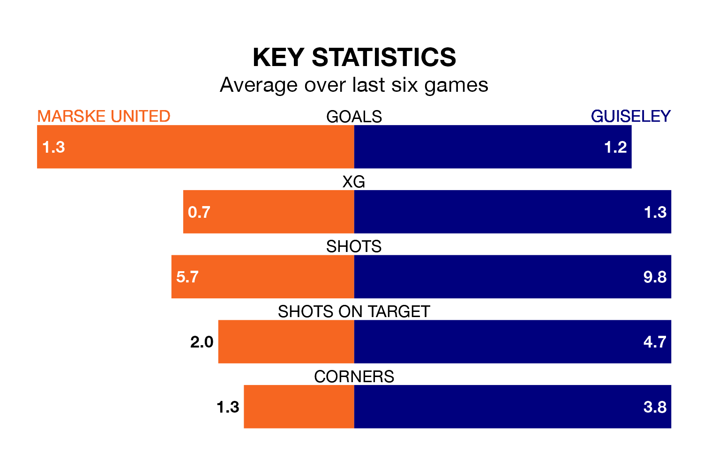

Guiseley make the journey to the GER Stadium to play Marske United on Monday looking to pick up points to end their three-game losing streak.
Guiseley's struggles have left them with six points from their last six Northern Premier League matches, while their opponents have earned nine from a possible 18.
Marske are 21st in the table after 22 games, of which they have won seven and lost 15, earning 21 points.
Guiseley are 12 places ahead of United in ninth, with 16 wins and seven draws putting them on 55 points.
With 30 goals in 22 games so far this season, the hosts are the league's lowest scorers with 1.4 goals per game. And they are conceding more than average, letting in 53 goals at a rate of 2.4 per game.
The Lions, meanwhile, are above average scorers, with 1.8 goals per game, compared to a league average of 1.6. They have conceded 1.5 goals per game.
In the last three years, Marske and Guiseley have played each other on three occasions. Marske won two of them and Guiseley one.
Their last meeting was on December 26, when Marske won 3-2 away.
Marske's last match was on December 30, a 2-0 loss against Morpeth Town.
Guiseley lost 3-2 against Lancaster City last time out, on Saturday.
Updated: 10:31 (UTC), 31/03/24